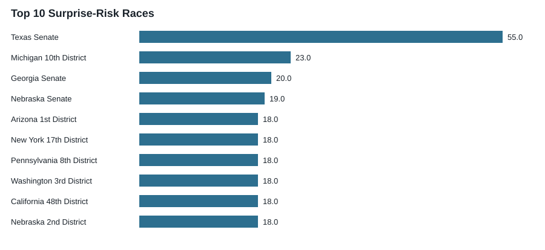
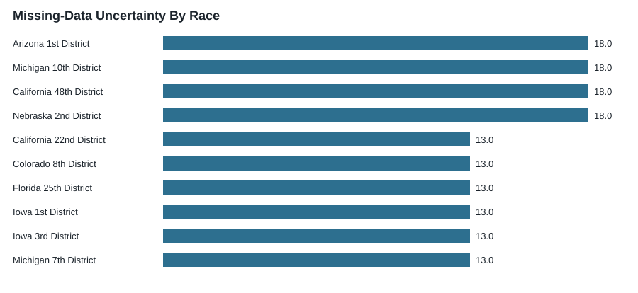
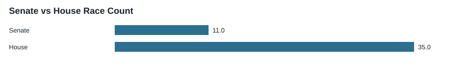
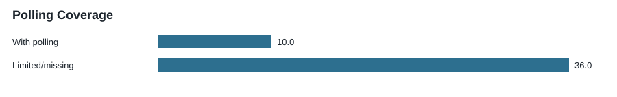

A surprise-risk score is not a win probability. A score of 55 does not mean a candidate has a 55% chance of winning. It is a 0-100 forecast-fragility score that highlights where conventional expectations may be more vulnerable to structural change or missing data.
Structural Signal And Missing Data
Structural signal means evidence of candidate, turnout, endorsement, polling-screen, or party-coordination fragility. Missing-data uncertainty means a race remains hard to interpret because polling, candidate, or cohort evidence is sparse. The dashboard tracks both, but does not treat them as the same thing.
Top 10 Surprise-Risk Races

This chart ranks races by forecast fragility, not by win probability. Higher scores mean the race may be more vulnerable to structural shocks or missing-data uncertainty.
| race_display_name | chamber | state | district | overall_surprise_risk_score | surprise_risk_label |
|---|---|---|---|---|---|
| Texas Senate | U.S. Senate | TX | 55.0 | elevated | |
| Michigan 10th District | U.S. House | MI | 10 | 23.0 | watch |
| Georgia Senate | U.S. Senate | GA | 20.0 | watch | |
| Nebraska Senate | U.S. Senate | NE | 19.0 | low | |
| Arizona 1st District | U.S. House | AZ | 1 | 18.0 | low |
| New York 17th District | U.S. House | NY | 17 | 18.0 | low |
| Pennsylvania 8th District | U.S. House | PA | 8 | 18.0 | low |
| Washington 3rd District | U.S. House | WA | 3 | 18.0 | low |
| California 48th District | U.S. House | CA | 48 | 18.0 | low |
| Nebraska 2nd District | U.S. House | NE | 2 | 18.0 | low |
Missing-Data Uncertainty

This chart shows where the dashboard lacks enough public evidence to interpret the race confidently. Missing data is not the same as movement toward either party.
Senate vs House

The current prototype tracks competitive federal races only: Senate races and House districts relevant to November outcomes.
Polling Coverage

Polling coverage remains limited, especially in House races. Sparse polling is one reason the dashboard separates structural evidence from missing-data uncertainty.